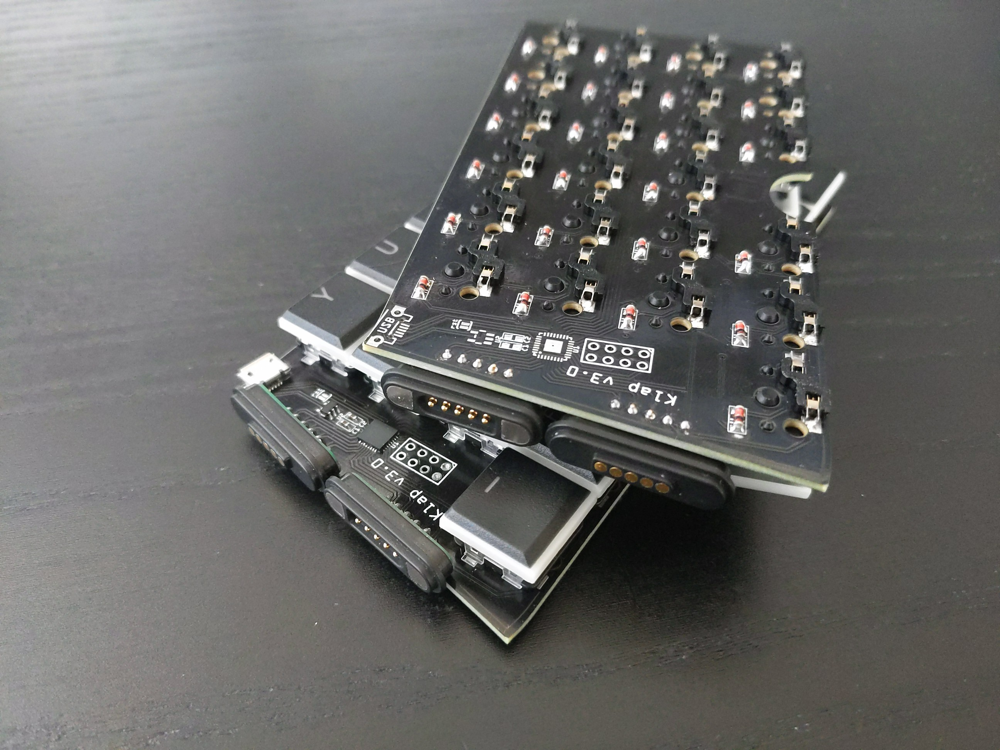

Version 3¶
Published on 2022-04-12 in Klap Keyboard.
This is mostly fixing the mistakes from version 2: the holes are now tight enough to hold the switches firmly, the routing is fixed so the microcontroller and USB socket can be on the top of the right half, as intended, a few diode footprints that were reversed have been fixed too (but still all the diodes are reversed, so you need that flag in software that flips the rows and columns). There are also some changes: the halves are now connected with two magnetic connectors, so they can be easily broken up for transport. However, to do that, I had to limit the number of lines going to the other half to 10 (4 rows and 6 columns), so I had to remove some keys in the weirder positions — I never used them anyways.
I will post an update with the design files, parts and code for this later.